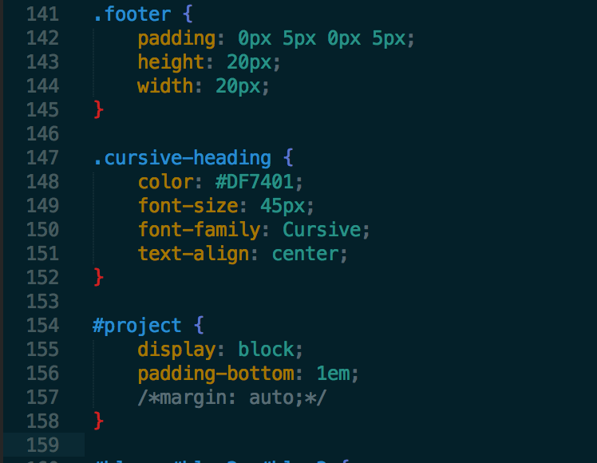
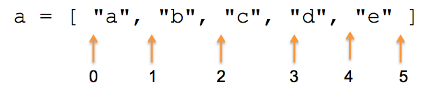

What is Git & Why Should You Use It?
FJ Collins Jr. - December 31, 2015
In order to understand that benefits of Git, one must understand exactly what is version control.
FJ Collins Jr. - December 31, 2015
In order to understand that benefits of Git, one must understand exactly what is version control.
FJ Collins Jr. - January 17, 2016
There is often a question of "when do I use classes vs. IDs when styling an HTML doc?"
FJ Collins Jr. - January 24, 2016
Both are very similar and unique at the same time and both can be very powerful tools used when writing Ruby.
FJ Collins Jr. - Date
FJ Collins Jr. - Date
FJ Collins Jr. - Date
FJ Collins Jr. - Date